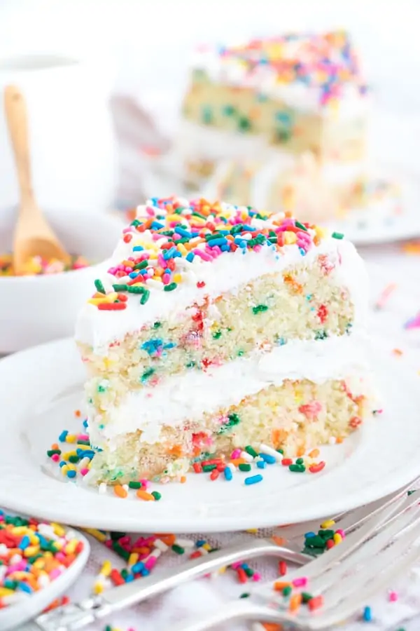

Vegan Funfetti Cake
A festive, dairy-free delight with sprinkles in every bite!

Prep Time:
20 min
Cook Time:
30 min
Servings:
10 slices
Difficulty:
Easy
Ingredients
Instructions
2 1/2 cups all-purpose flour
1 1/2 cups organic cane sugar
1 tbsp baking powder
1/2 tsp baking soda
1/2 tsp salt
1 1/2 cups almond milk
1/2 cup neutral oil
1 tbsp apple cider vinegar
2 tsp vanilla extract
1/3 cup vegan rainbow sprinkles
Preheat the oven to 350°F (175°C). Lightly grease two 8-inch round cake pans and line the bottoms with parchment paper.
In a large bowl, whisk together flour, sugar, baking powder, baking soda, and salt.
In another bowl, combine almond milk, oil, vinegar, and vanilla. Pour wet into dry ingredients and mix until just combined.
Fold in the sprinkles gently with a spatula.
Divide batter evenly between pans and bake for 30–33 minutes or until a toothpick comes out clean.
Let cool in pans for 10 minutes, then transfer to a wire rack to cool completely before frosting.
Chef’s Tips
Use naturally-colored vegan sprinkles to keep it bright and clean.
Frost with vegan buttercream or whipped coconut cream for best results.
Store covered at room temp for up to 3 days.